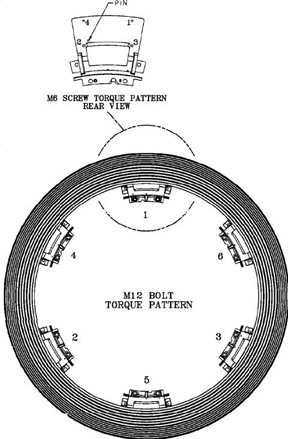

Start with bracket location # 1 (see Illustration 5) and set the torque on the two (2) 12 mm bolts to the setting defined in Table 3:
Repeat for cast mounting bracket # 2 through # 6 in order.
Table 3: 12mm Bracket to Gantry Bolts (2 per bracket)
| 66.4 N-m | 49 lb-ft | 587.7 lb-in | 677 kg-cm |
Illustration 5: slip ring Platter Torque Pattern
